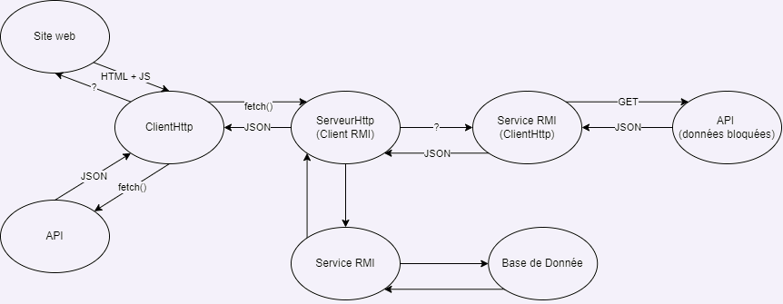

BESOIN Baptiste
DEVOITINE Célèna
DECHEZLEPRETRE Luc
RICHARDIN--DUTILLEUL Killian
Compte Rendu
Github :
Lien pour accéder au GitHub :
ici
Schéma de l'architecture:

Technologies employées:
Ce qui a été réalisé:
Informations nécessaires à l'utilisation de infoNancy:
Informations utilise à la compréhension de notre travail:
Consigne pour la rédaction du compte rendu:
Votre site devra proposer un onglet "compte rendu", contenant le compte rendu de votre travail :
- un schéma complet de votre architecture, avec les technologies employées et échangées,
- ce qui a été fait,
- les informations nécessaires à l'utilisation de votre projet,
- tout ce qui est utile à la compréhension de votre travail.